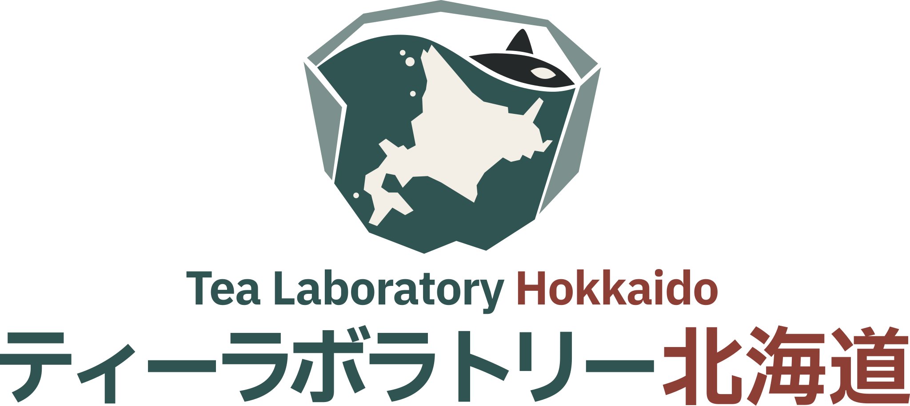

A-01
FOOD & BEVERAGE R&D
茶、食品、飲料に関する調査、処方設計、試作、官能評価。
01 INDEPENDENT LABORATORY / RESEARCH STUDIO

北海道を基盤に、
食・技術・実装を横断する。
ティーラボラトリー北海道は、北海道を基盤に、食品・飲料の商品開発、機器開発、飲食店向けソフトウェア開発、地域資源の調査などを行う独立した研究・制作活動です。食品科学、工学、デザイン、ソフトウェアなど複数の領域を横断し、現場の問題を調べ、試作し、実装し、検証することを重視しています。
A-01
茶、食品、飲料に関する調査、処方設計、試作、官能評価。
A-02
飲料・食品の商品企画、レシピ開発、店舗への実装。
A-03
飲食店向け機器、治具、工程改善、プロトタイプの設計・開発。
A-04
飲食店向け業務ソフトウェア、店舗オペレーション支援ツール、UIの開発。
A-05
北海道の食品、地域資源、文化、産業に関する調査。
A-06
グラフィック、UI/UX、試作、検証を通じた実装。
ティーラボラトリー北海道は、2026年8月よりThe TEAとは独立した活動として運営しています。
本サイトはThe TEAの公式サイトではありません。
活動記録は順次掲載します。